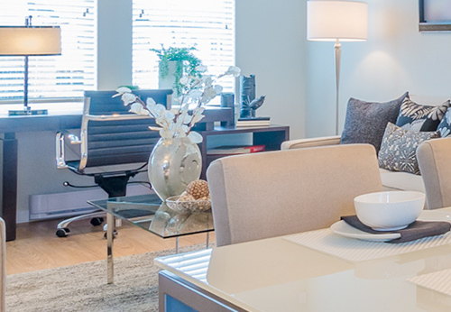

|
Alpine In the small town of Alpine, you will find that you are surrounded by absolutely beautiful residential housing. The homes in this town are nothing short of impressive. You are also within close reach of amenities from neighboring towns for your convenience of necessities, as well as superb schooling systems in Bergen County.

Glen Rock Glen Rock is a small, peaceful, communal town where you can find everything your heart desires. With its native land untouched, it is vibrant and thriving; inhabited by families and commuters to NYC, an absolute must to consider! Dumont Dumont is an ideal town for anyone looking to settle down. Everything can be found within walking distance, including the highest rated schooling systems, unique shops and restaurants. |